Welcome back! I hope you are ready for the real meat of our course - the beginnings of putting all of what we have been learining into practice. But in order to understand what we are going to be doing here we need to have a quick recap of basic statistics. In their simplest definition many univariate parametric statistical tests (those are things like t-test, ANOVA, GLM, GLMM) are testing for whether the means from two or more treatments are stastically different. They do this by calculating the proportion of either treatment’s distribution that overlaps with the other treatment’s distribution. If that proportion is sufficiently low (say around 5%) then we reject the null hypothesis (the distributions overlap one another too much and so we cannot say with sufficient surity that the means are really different). Otherwise if there is more that around 5% overlap we can’t reject the null hypothesis and so the means are not different. Right so let’s start at the beginning.
There are several different kinds of t-tests. I’m not going to go through them all here, they all work in a similar manner. For now we will just go with the independent samples t-test. This tests for whether the difference between the two treatment means is different from zero. If it is then the means are not the same. Let’s pull up some data:
sleep## extra group ID
## 1 0.7 1 1
## 2 -1.6 1 2
## 3 -0.2 1 3
## 4 -1.2 1 4
## 5 -0.1 1 5
## 6 3.4 1 6
## 7 3.7 1 7
## 8 0.8 1 8
## 9 0.0 1 9
## 10 2.0 1 10
## 11 1.9 2 1
## 12 0.8 2 2
## 13 1.1 2 3
## 14 0.1 2 4
## 15 -0.1 2 5
## 16 4.4 2 6
## 17 5.5 2 7
## 18 1.6 2 8
## 19 4.6 2 9
## 20 3.4 2 10This data shows the response of students to a sleeping drug. Extra shows the change in hours slept, group shows the treatment that they were given, and ID is the participant number. Technically this is a paired sample but we will ignore that for now. Let’s plot the density distributions and boxplots of the two groups of students:
sleep.dens <- ggplot(data = sleep, aes(x = extra, colour = group)) +
geom_density()
sleep.box <- ggplot(data = sleep, aes(x = group, y = extra)) +
geom_boxplot()
plot_grid(sleep.dens, sleep.box, labels = "AUTO")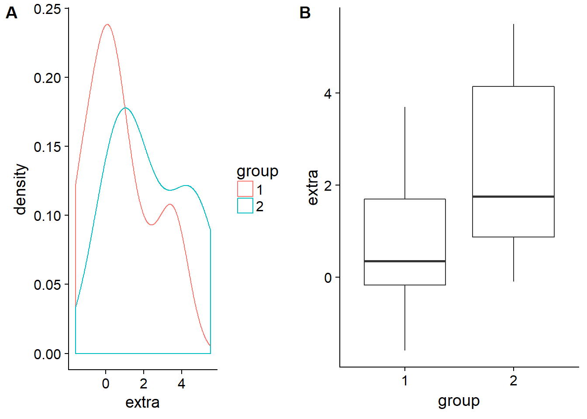
So group two definitely seems to gain around an hour and a half or so more hours of sleep. But this is just visual data analysis - not very statistical…
To test this we can call up t.test(). type ?t.test to pull up the help file. There are two methods that we can use to enter our data into the arguments of this function - the one I find the most useful is the ## S3 method for class 'formula'. This is a pretty universal way that many statistical functions require their arguments to be inputted:
test.name() - the name of the formula to carry out the required statistical calculation. formula - the formula that the distributions follow. The response variable (the y value, what we measured) goes on the left. The factors which describe the response variable’s distribution go on the right. These two sides are sepparated by a ~. *data - where the data can be found.
That’s it. There are other arguments that are specific to the kind of test that can also be included in these functions. We can play around with these in a moment but for now let’s run the test:
sleepTtest <- t.test(extra ~ group, data = sleep)
sleepTtest##
## Welch Two Sample t-test
##
## data: extra by group
## t = -1.8608, df = 17.776, p-value = 0.07939
## alternative hypothesis: true difference in means is not equal to 0
## 95 percent confidence interval:
## -3.3654832 0.2054832
## sample estimates:
## mean in group 1 mean in group 2
## 0.75 2.33That is a pretty neat output. Note what I did there - I saved the test as a variable called sleepTtest (I could have called it anything) and then I called that variable. As soon as I run both those lines my output is printed out. The great thing about doing it this way is that once I have saved my output it is saved - I don’t have to sift through pages of SPSS output printouts looking for the test I want anymore. If I want to know what the details of the test were then I can just call sleepTtest again and I’ll have my answer.
Our output here showed that the mean difference was not significant at the 5% level. But looking at the ID field we can see that these are the same subjects and so the test is actually a paired samples test. To incorporate this new bit of information into our test we can go:
sleepTtest <- t.test(extra ~ group, data = sleep, paired = TRUE)
sleepTtest##
## Paired t-test
##
## data: extra by group
## t = -4.0621, df = 9, p-value = 0.002833
## alternative hypothesis: true difference in means is not equal to 0
## 95 percent confidence interval:
## -2.4598858 -0.7001142
## sample estimates:
## mean of the differences
## -1.58And there you have it - this sleeping pill significantly improves the students’ sleeping time by giving them an extra 1.58 hours of sleep! Pretty neat hey. But in the life sciences we seldom do tests involving only two treatments and so analysis of variance is probably more relevant to us. The method is similar.
aov()The dataset we will use here is called npk. Peas were fertilised with combinations of nitrogen, phosphorus, and potassium using a factorial disign:
npk## block N P K yield
## 1 1 0 1 1 49.5
## 2 1 1 1 0 62.8
## 3 1 0 0 0 46.8
## 4 1 1 0 1 57.0
## 5 2 1 0 0 59.8
## 6 2 1 1 1 58.5
## 7 2 0 0 1 55.5
## 8 2 0 1 0 56.0
## 9 3 0 1 0 62.8
## 10 3 1 1 1 55.8
## 11 3 1 0 0 69.5
## 12 3 0 0 1 55.0
## 13 4 1 0 0 62.0
## 14 4 1 1 1 48.8
## 15 4 0 0 1 45.5
## 16 4 0 1 0 44.2
## 17 5 1 1 0 52.0
## 18 5 0 0 0 51.5
## 19 5 1 0 1 49.8
## 20 5 0 1 1 48.8
## 21 6 1 0 1 57.2
## 22 6 1 1 0 59.0
## 23 6 0 1 1 53.2
## 24 6 0 0 0 56.0So we have three treatment variables with one blocking variable. Pretty standard agricultural or greenhouse experiment. To test for whether the means of the different treatments are present we would follow a similar proceedure. We will use aov() to conduct the analysis and then in order to produce the output analysis of variance table we will use anova(). The three most reasonable ways we could carry out this analysis are:
## the most basic model. Fertilisation as main effects. No blocking or interactions incorporated.
npkAov <- aov(yield ~ N + P + K, data = npk)
## blocking has now been included.
npkAov <- aov(yield ~ N + P + K + block, data = npk)
## both interactions and blocking have been incorporated into our model
npkAov <- aov(yield ~ N*P*K + block, data = npk)anova()Having done that we need to call a separate function to produce our analysis of variance table. anova() produces anova tables for aov(), lm() (linear models), and glm(). To get the output all we need to do is:
anova(npkAov)## Analysis of Variance Table
##
## Response: yield
## Df Sum Sq Mean Sq F value Pr(>F)
## block 5 343.29 68.659 4.4467 0.015939 *
## N 1 189.28 189.282 12.2587 0.004372 **
## P 1 8.40 8.402 0.5441 0.474904
## K 1 95.20 95.202 6.1657 0.028795 *
## N:P 1 21.28 21.282 1.3783 0.263165
## N:K 1 33.13 33.135 2.1460 0.168648
## P:K 1 0.48 0.482 0.0312 0.862752
## Residuals 12 185.29 15.441
## ---
## Signif. codes: 0 '***' 0.001 '**' 0.01 '*' 0.05 '.' 0.1 ' ' 1That’s a pretty neat little output. But copying it into our document isn’t as easy as you might think. This output is only text - to put it into a tabular form we need to tidy it up using tidy() from the broom package. Install broom now, load it from the library and then go:
tidyNPKAnova <- tidy(anova(npkAov))
View(tidyNPKAnova)That’s now saved your anova into a neat little table which you can copy into Excel to format the lines. This is the simplest way that I know about how to make tables but there are whole packages specifically dedicated to producing publication quality tables from within R. The way you copy these tables into Excel is that you scroll down to the bottom right corner of the table, click in there and then drag up to the top left. Then copy and paste into Excel - there are better ways but this is quick and nasty.
emmeansOkay, now how do we see the results of this analysis of variance graphically? Can we carry out post hoc tests? To be honest this dataset isn’t the greatest for doing that. I chose it because it has lost of variables and it can easily show you how to incorporate multiple variables into the formula argument. To look at post hoc comparrisons we will run a new test on the iris dataset. This contains flower morphology measurements from three species of iris:
head(iris)## Sepal.Length Sepal.Width Petal.Length Petal.Width Species
## 1 5.1 3.5 1.4 0.2 setosa
## 2 4.9 3.0 1.4 0.2 setosa
## 3 4.7 3.2 1.3 0.2 setosa
## 4 4.6 3.1 1.5 0.2 setosa
## 5 5.0 3.6 1.4 0.2 setosa
## 6 5.4 3.9 1.7 0.4 setosaLet’s see if there is a difference in Sepal.Width across the three species:
ggplot(iris) +
geom_density(aes(x = Sepal.Width, colour = Species))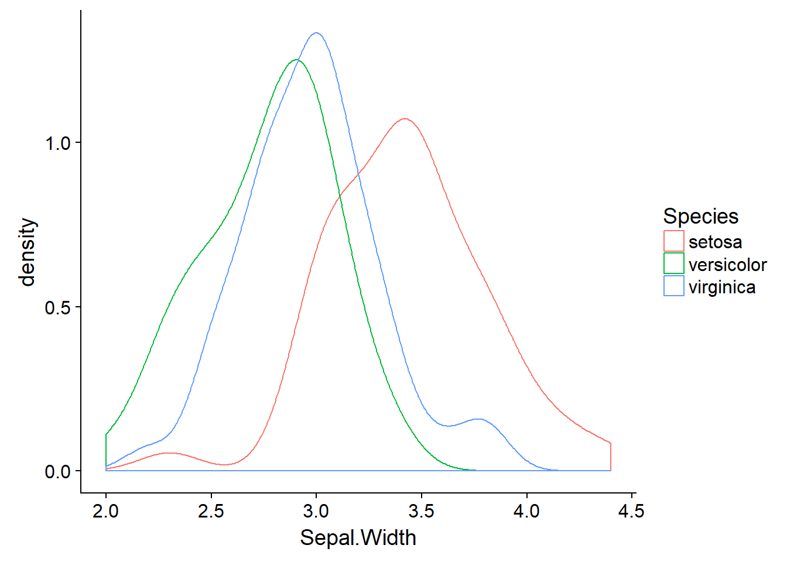
irisAov <- aov(Sepal.Width ~ Species, data = iris)
anova(irisAov)## Analysis of Variance Table
##
## Response: Sepal.Width
## Df Sum Sq Mean Sq F value Pr(>F)
## Species 2 11.345 5.6725 49.16 < 2.2e-16 ***
## Residuals 147 16.962 0.1154
## ---
## Signif. codes: 0 '***' 0.001 '**' 0.01 '*' 0.05 '.' 0.1 ' ' 1Ahh - an extremely significant result. It seems likely that versicolor and verginica are somewhat similar but that setosa has much wider sepals. We can extract the means for each species with (what I think is a fantastic package) emmeans. Install it and load it from your library now. This package is incredibly powerful and will be useful when we move on to GLMs in the next section. It extracts the estimated marginal means from the analysis object (irisAov in our case) and then presents them on either the analysis scale or the response scale. Let’s try it out:
irisAov <- aov(Sepal.Width ~ Species, data = iris)
irisEmm <- emmeans(irisAov, ~ Species)
irisEmm## Species emmean SE df lower.CL upper.CL
## setosa 3.428 0.0480391 147 3.333064 3.522936
## versicolor 2.770 0.0480391 147 2.675064 2.864936
## virginica 2.974 0.0480391 147 2.879064 3.068936
##
## Confidence level used: 0.95This is the most basic output but already it is very neat and very powerful. We can do better though. If we want the pairwise contrasts for each treatment combination then we can go:
irisAov <- aov(Sepal.Width ~ Species, data = iris)
irisEmm <- emmeans(irisAov, ~ Species)
pairs(irisEmm)## contrast estimate SE df t.ratio p.value
## setosa - versicolor 0.658 0.06793755 147 9.685 <.0001
## setosa - virginica 0.454 0.06793755 147 6.683 <.0001
## versicolor - virginica -0.204 0.06793755 147 -3.003 0.0088
##
## P value adjustment: tukey method for comparing a family of 3 estimatesNote that pairs() automatically incorporates an adjustment to the p-value based on the number of treatments! SPSS would never do this. But if this output isn’t easy for you to interpret we can see it graphically:
irisAov <- aov(Sepal.Width ~ Species, data = iris)
irisEmm <- emmeans(irisAov, ~ Species)
## this just plots the means and the confidence intervals
irisWithout <- plot(irisEmm)
## this incorporates a red arrow. If the arrows overlap then the means are not different. Verginica and Versicolor are somewhat similar (p = 0.0088) but their arrows do not overlap and so they are regarded as different.
irisWith <- plot(irisEmm, comparisons = TRUE)
plot_grid(irisWithout, irisWith, labels = "AUTO")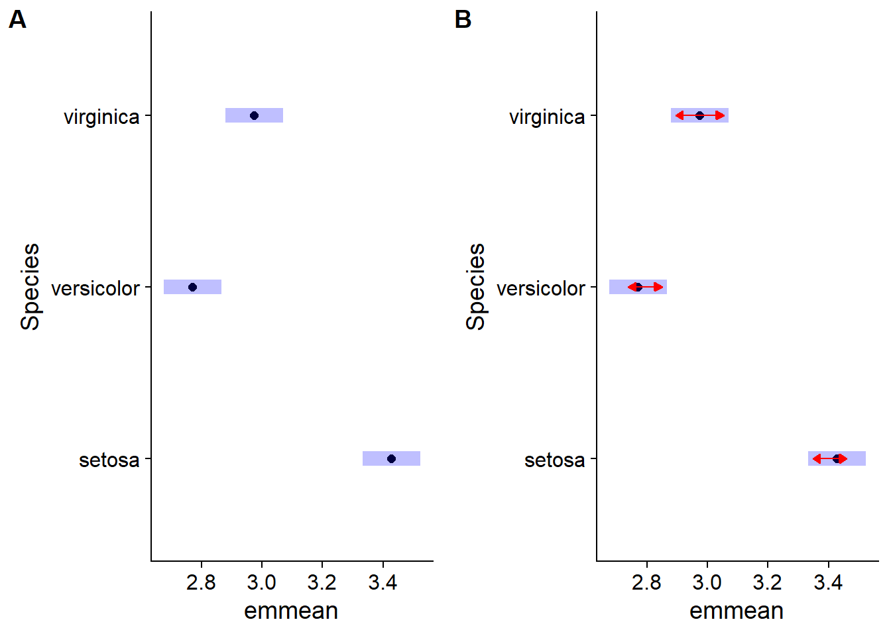
But wait there is more! You can get this output with number groups. emmeans has a function called cld() which assigns groups of treatments sharing the same mean the same number:
irisAov <- aov(Sepal.Width ~ Species, data = iris)
irisEmm <- emmeans(irisAov, ~ Species)
irisCld <- cld(irisEmm)
irisCld## Species emmean SE df lower.CL upper.CL .group
## versicolor 2.770 0.0480391 147 2.675064 2.864936 1
## virginica 2.974 0.0480391 147 2.879064 3.068936 2
## setosa 3.428 0.0480391 147 3.333064 3.522936 3
##
## Confidence level used: 0.95
## P value adjustment: tukey method for comparing a family of 3 estimates
## significance level used: alpha = 0.05Clearly all species have drastically different sepal widths. This is a fairly nice output but suppose we wanted to plot it with ggplot2? How would we do that. Well luckily cld() saves the above table as a nice, neat dataframe which we can just dive into with ggplot2:
irisAov <- aov(Sepal.Width ~ Species, data = iris)
irisEmm <- emmeans(irisAov, ~ Species)
irisCld <- cld(irisEmm)
irisCld## Species emmean SE df lower.CL upper.CL .group
## versicolor 2.770 0.0480391 147 2.675064 2.864936 1
## virginica 2.974 0.0480391 147 2.879064 3.068936 2
## setosa 3.428 0.0480391 147 3.333064 3.522936 3
##
## Confidence level used: 0.95
## P value adjustment: tukey method for comparing a family of 3 estimates
## significance level used: alpha = 0.05ggplot(data = irisCld) +
geom_pointrange(aes(x = Species, y = emmean, ymin = lower.CL, ymax = upper.CL)) +
geom_text(aes(x = Species, y = upper.CL + 0.075, label = .group))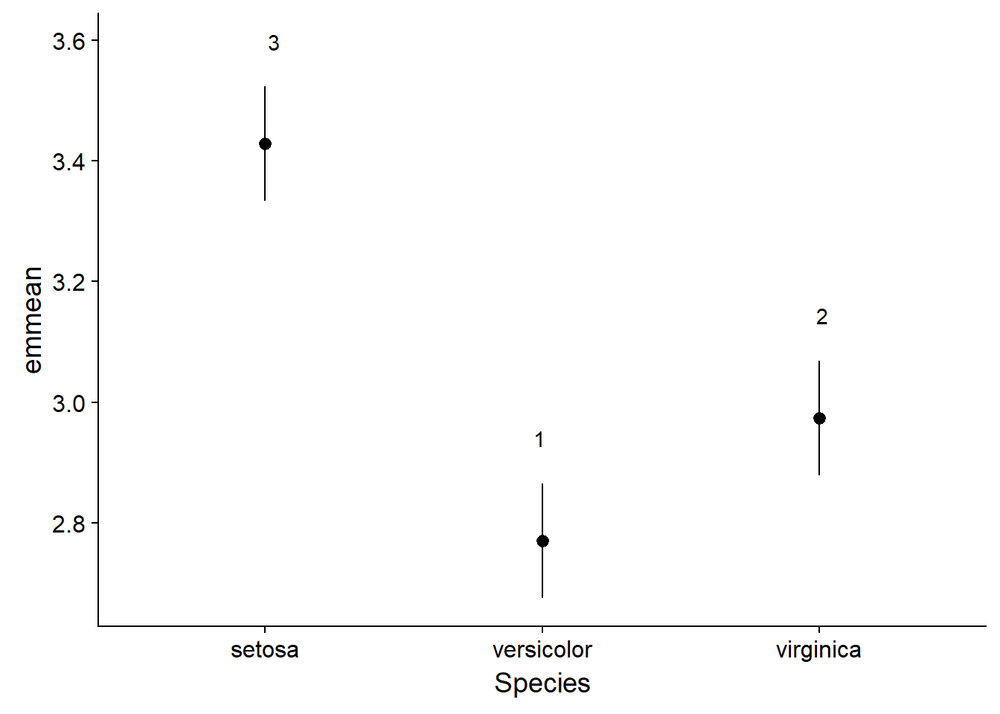
Pretty simple hey? No more playing around in PowerPoint to get that right. Everything can be done from right in R. And if you want to be a little more specific with how your labels are positioned these figures are entirely editible as you can export them as a .SVG file. Open that up in a free program called Inkscape and you can move any point or label around. This will be very useful later when we produce some multivariate figures with lots of species and environmental variable labels. So that is the basics of anova in R. But anovas are not the most reliable statistical tool for testing whether the means of treatments are different. The reason for this is that anova contains many assuptions. This means that if we want to ensure our data meet this seemingly endless list of assumptions then we need to drastically transform our data - something which is challenging to do in itself and then you are left with results based on transformed data which your reader probably can’t understand very well. That’s where GLMs (generalised linear models) come into the picture. You’ll never use t-tests or anovas again!
glm()The main constraint with our data is the distribution that it follows. If you’ve noticed before almost every test that we have carried out I have produced a density plot to show how the raw data are distributed. This is a very important thing to do because the underlying distribution dictates how you should carry out your analysis. On top of that the kind of data you’ve collected further details your analysis techniques.
glm() is is the function that we use to give more detailed descriptions of how we want our data to be analysed. It constains similar arguments to our previous functions (formula and data) but it adds another key argument (family). This argument allows you to tell glm() what kind of distribution it should use to analyse your data. Type ?family to get a quick run down of the different families that are available. In some extreme cases your data might not align towards any of those families (such as when you have lots of zeros on a continuous positive scale). If that happens there are packages that you can load which allow you to modify your distributions to handle this difficult kind of data. GLMs allow you to accurately model:
Each distribution family has something called a link function associated with it. This is a transformation method that is used to take your untransformed data and fit it to the distribution that you have chosen. These are normally matched to your family but you can modify them should you wish to. Generally we can keep this at the standard setting.
Gamma() familyTo carry out our analyses here we are going to need to access some data contained within another package. Please download car. Load this package and the carData package. The datasets that we will use here are contained within the latter package. Type View(carData::Salaries) to pull up and expect the dataset. Type ?carData::Salaries to pull up the dataset’s help file.
sal.rank <- ggplot(data = Salaries) +
geom_density(mapping = aes(x = salary, colour = rank))
sal.disc <- ggplot(data = Salaries) +
geom_density(mapping = aes(x = salary, colour = discipline))
sal.sex <- ggplot(data = Salaries) +
geom_density(mapping = aes(x = salary, colour = sex))
plot_grid(sal.rank, sal.disc, sal.sex, labels = "AUTO")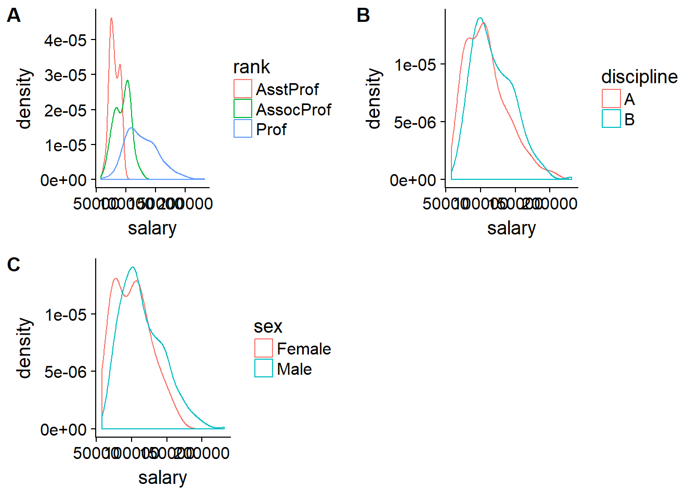
Not quite a normal distribution. These data follow a gamma distribution. There are a couple of other variables in this dataset but for now we will just stick with categorical factors. We’ll compare the analysis of these three factors on a normal and gamma distribution:
salariesGLMgaus <- glm(salary ~ rank*discipline*sex, data = Salaries, family = gaussian())
salariesGLMgamma <- glm(salary ~ rank*discipline*sex, data = Salaries, family = Gamma())
print("Gaussian model AIC: ")## [1] "Gaussian model AIC: "print(salariesGLMgaus$aic)## [1] 9106.881print("Gamma model AIC: ")## [1] "Gamma model AIC: "print(salariesGLMgamma$aic)## [1] 9006.735We’ve just saved the GLM calls into two different object names. We’ve then looked into those objects and then called up the AIC value. This stands for the “An Information Criterion”. This is a mesurement of how well the data fit the model we have chosen - the lower the number the better the fit so choosing the Gamma() family is the better option. The number is on an arbitrary scale.
Now that we’ve called up cars (the package name stands for “Companion to Applied Regression”) we can use its Anova() function instead of the basic anova():
salariesGLMgamma <- glm(salary ~ rank*discipline*sex, data = Salaries, family = Gamma())
Anova(salariesGLMgamma)## Analysis of Deviance Table (Type II tests)
##
## Response: salary
## LR Chisq Df Pr(>Chisq)
## rank 368.02 2 < 2.2e-16 ***
## discipline 40.56 1 1.906e-10 ***
## sex 1.93 1 0.16490
## rank:discipline 6.01 2 0.04949 *
## rank:sex 0.52 2 0.77255
## discipline:sex 1.77 1 0.18343
## rank:discipline:sex 0.64 2 0.72793
## ---
## Signif. codes: 0 '***' 0.001 '**' 0.01 '*' 0.05 '.' 0.1 ' ' 1We can also use anova() but then we would also have to tell the function what test to run. If we don’t then it won’t compute the test statistic and p-value.
salariesGLMgamma <- glm(salary ~ rank*discipline*sex, data = Salaries, family = Gamma())
anova(salariesGLMgamma)## Analysis of Deviance Table
##
## Model: Gamma, link: inverse
##
## Response: salary
##
## Terms added sequentially (first to last)
##
##
## Df Deviance Resid. Df Resid. Dev
## NULL 396 27.044
## rank 2 12.4840 394 14.560
## discipline 1 1.3819 393 13.178
## sex 1 0.0741 392 13.104
## rank:discipline 2 0.2335 390 12.871
## rank:sex 2 0.0129 388 12.858
## discipline:sex 1 0.0603 387 12.798
## rank:discipline:sex 2 0.0216 385 12.776anova(salariesGLMgamma, test = "Chisq")## Analysis of Deviance Table
##
## Model: Gamma, link: inverse
##
## Response: salary
##
## Terms added sequentially (first to last)
##
##
## Df Deviance Resid. Df Resid. Dev Pr(>Chi)
## NULL 396 27.044
## rank 2 12.4840 394 14.560 < 2.2e-16 ***
## discipline 1 1.3819 393 13.178 1.901e-10 ***
## sex 1 0.0741 392 13.104 0.14022
## rank:discipline 2 0.2335 390 12.871 0.03246 *
## rank:sex 2 0.0129 388 12.858 0.82708
## discipline:sex 1 0.0603 387 12.798 0.18343
## rank:discipline:sex 2 0.0216 385 12.776 0.72793
## ---
## Signif. codes: 0 '***' 0.001 '**' 0.01 '*' 0.05 '.' 0.1 ' ' 1So now that we have our anova table we can see that both rank and discipline but not sex affect the salaries of professors at one United States university. But there is also an interaction effect between rank and discipline. The effect of rank is not consistant across disciplnes. Let’s have a closer look at this using emmeans:
salariesGLMgamma <- glm(salary ~ rank*discipline*sex, data = Salaries, family = Gamma())
plot(emmeans(salariesGLMgamma, ~rank), comparisons = TRUE)## NOTE: Results may be misleading due to involvement in interactions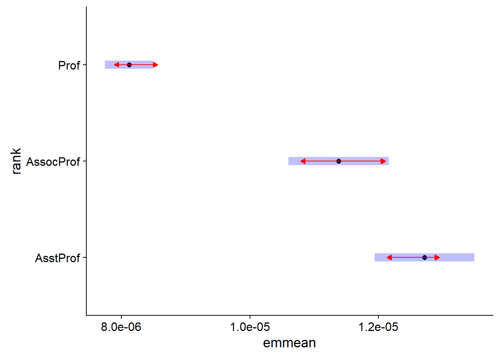
plot(emmeans(salariesGLMgamma, ~discipline), comparisons = TRUE)## NOTE: Results may be misleading due to involvement in interactions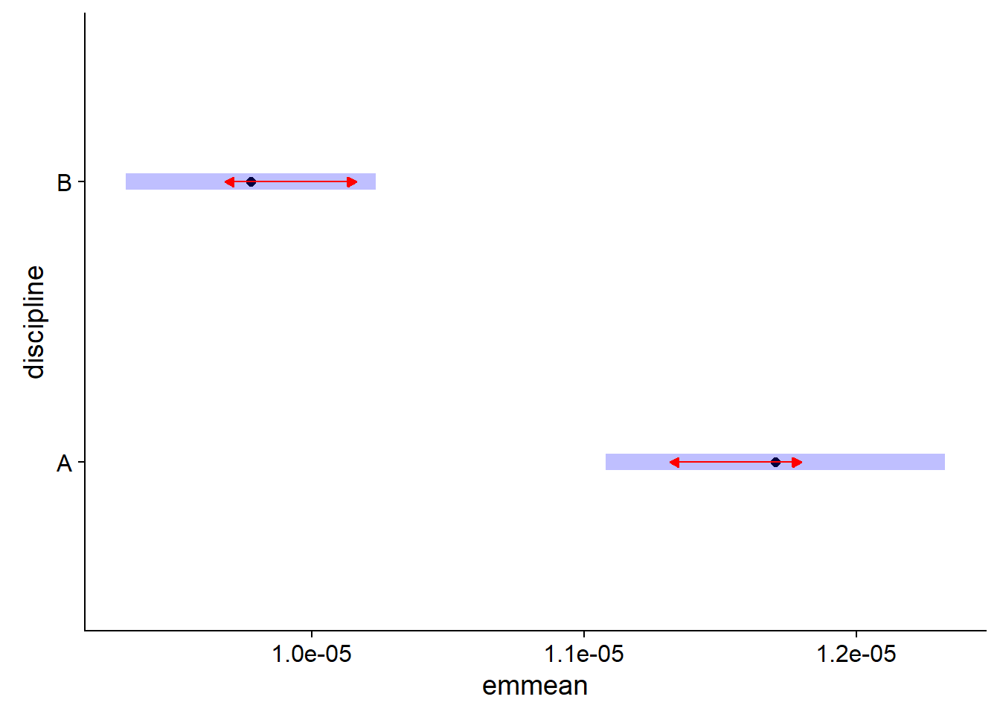
plot(emmeans(salariesGLMgamma, ~rank*discipline), comparisons = TRUE)## NOTE: Results may be misleading due to involvement in interactions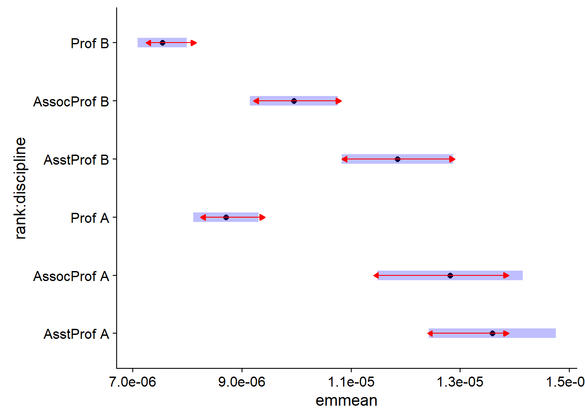
And now lets plot the interaction with groupings in ggplot:
salariesGLMgamma <- glm(salary ~ rank*discipline*sex, data = Salaries, family = Gamma())
rankDiscCld <- cld(emmeans(salariesGLMgamma, ~rank*discipline, type = "response"))## NOTE: Results may be misleading due to involvement in interactionsggplot(rankDiscCld) +
geom_pointrange(mapping = aes(x = rank, y = response, ymin = asymp.LCL, ymax = asymp.UCL, colour = discipline), position = position_dodge(0.5)) +
geom_text(mapping = aes(x = rank, y = asymp.UCL + 6000, group = discipline, label = .group), position = position_dodge(0.5))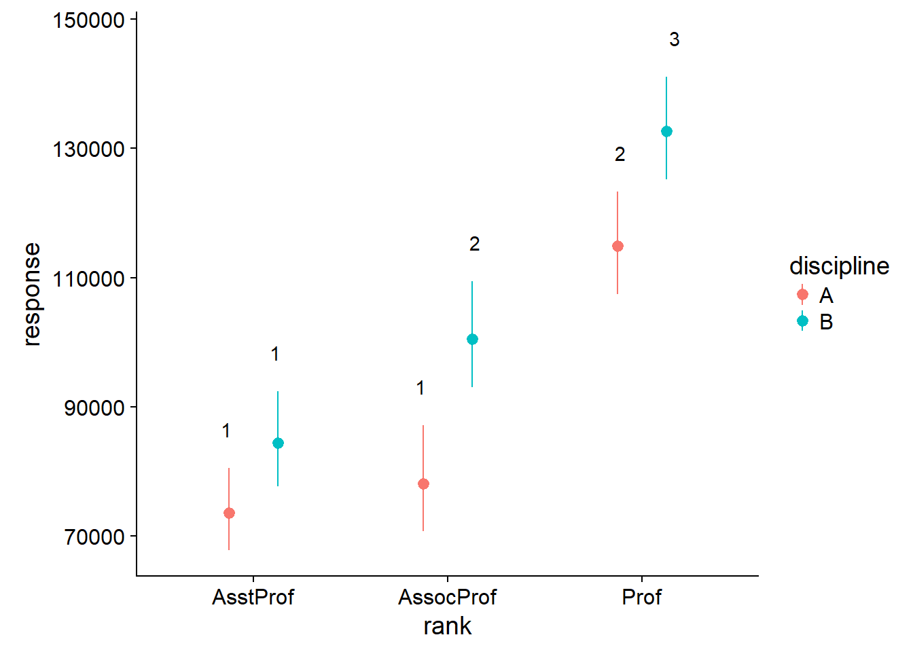
With geom_text() we need to tell ggplot how to group the different labels - we know that we must go with rank on the x-axis. Then we group by discipline and add a bit of space between the label and the upper confidence interval bar. But let’s see about making this figure “publication quality”:
salariesGLMgamma <- glm(salary ~ rank*discipline*sex,
data = Salaries,
family = Gamma())
rankDiscCld <- cld(emmeans(salariesGLMgamma,
~rank*discipline,
type = "response"))## NOTE: Results may be misleading due to involvement in interactionsggplot(rankDiscCld) +
geom_pointrange(mapping = aes(x = rank,
y = response,
ymin = asymp.LCL,
ymax = asymp.UCL,
colour = discipline),
position = position_dodge(0.5)) +
geom_text(mapping = aes(x = rank,
y = asymp.UCL + 6000,
group = discipline,
label = .group),
position = position_dodge(0.5)) +
theme(axis.title = element_text(size = 11,
colour = "black"),
axis.text = element_text(size = 9,
colour = "black"),
legend.background = element_blank(),
legend.text = element_text(size = 10,
colour = "black"),
legend.title = element_text(size = 11,
colour = "black")) +
labs(x = "Position",
y = "Annual salary ($)",
colour = "Discipline") +
scale_x_discrete(labels = c("Assistant prof",
"Associate prof",
"Full prof"))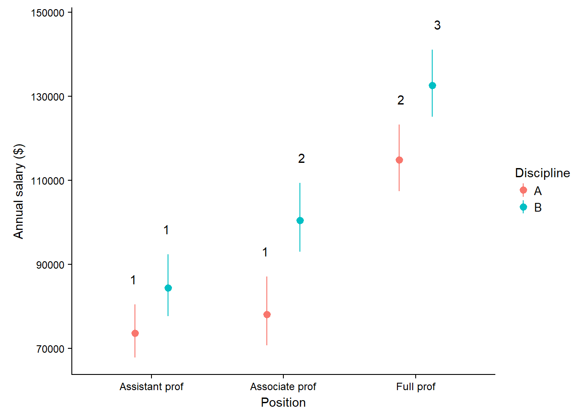
theme(), labs() and scale_x_discrete() may scare you at first but there isn’t much to them. You can probably get a good idea of what is going on without much explanation - it’s mainly just changing text sizes and colours, adding new labels to the x-axis and adding new title to the x and y axes. That’s about all there is to taking a GLM from start to finish.
binomial() familyI will quickly go through some details regarding the binomial distribution because it is a powerful distribution that is probably under-utilised. This distribution describes data which have a ‘success/failure’ kind of response. The key advantage of this distribution is that the y side of the formula can accept several ways of presenting data. The data can be in the form of proportions (values between zero and one), binary responses (ones or zeros), or successes and failures from which proportions can be calculated (suppose 40 seeds were planted, 28 germinate and 12 do not we would input the successes as 28 and the failures as 12). The last method is the most powerful I think because it incorporates a weighting (40 seeds for that recording) as well as the proportion. Just putting 0.7 in (28/40) does not tell the analysis how many individuals made up that data point. If there are several different numbers of seeds that are planted then the analysis takes those different numbers into consideration. Let’s see this in action. We are going to use a dataset which describes the number of visits to sunflowers over five minutes at sites which are at different distances away from an Apis melifera apiry. visitSoc describes the number of visits from social bees - A. melifera, and visitSol describes visits from solitary bees. site describes the site’s distance from the apiary, and area describes the size of the area that the site occupies.
sunflowerGlm <- glm(cbind(visitSoc, visitSol) ~ site, data = sunflower, family = binomial())
Anova(sunflowerGlm)## Analysis of Deviance Table (Type II tests)
##
## Response: cbind(visitSoc, visitSol)
## LR Chisq Df Pr(>Chisq)
## site 71.787 2 2.581e-16 ***
## ---
## Signif. codes: 0 '***' 0.001 '**' 0.01 '*' 0.05 '.' 0.1 ' ' 1sunflowerSiteCld <- cld(emmeans(sunflowerGlm, ~site, type = "response"))
ggplot(sunflowerSiteCld) +
geom_pointrange(mapping = aes(x = site,
y = prob,
ymin = asymp.LCL,
ymax = asymp.UCL),
position = position_dodge(0.5)) +
geom_text(mapping = aes(x = site,
y = asymp.UCL + 0.1,
label = .group),
position = position_dodge(0.5)) +
theme(axis.title = element_text(size = 11,
colour = "black"),
axis.text = element_text(size = 9,
colour = "black"),
legend.background = element_blank(),
legend.text = element_text(size = 10,
colour = "black"),
legend.title = element_text(size = 11,
colour = "black")) +
labs(x = "Site distance from apiary",
y = "Proportion of visis from social bees") +
scale_x_discrete(labels = c("< 5km",
"5km < x < 10km",
"10km <"))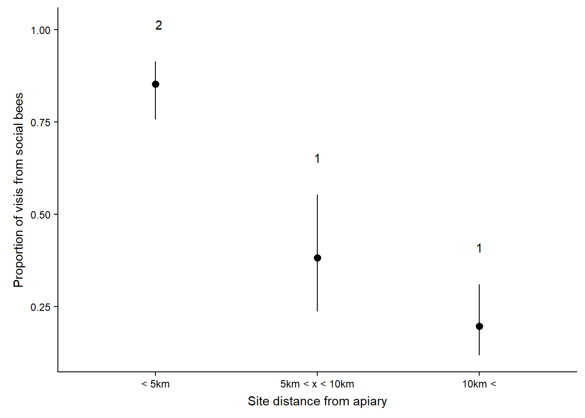
This plot is very impressive. Have a look at the errorbars - they are asymmetrical, bound between zero and 1. If you had to run this in SPSS you would have proportions that cross over into the negative and that’s impossible. And that’s about all there is to it for a basic introduction to GLMs in R. I hope that was helpful.